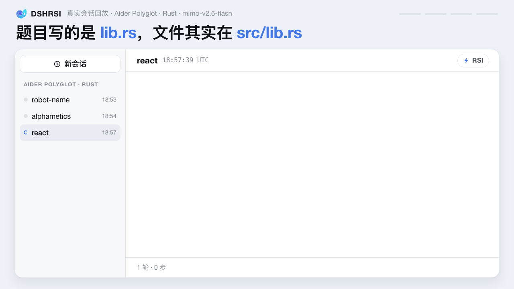
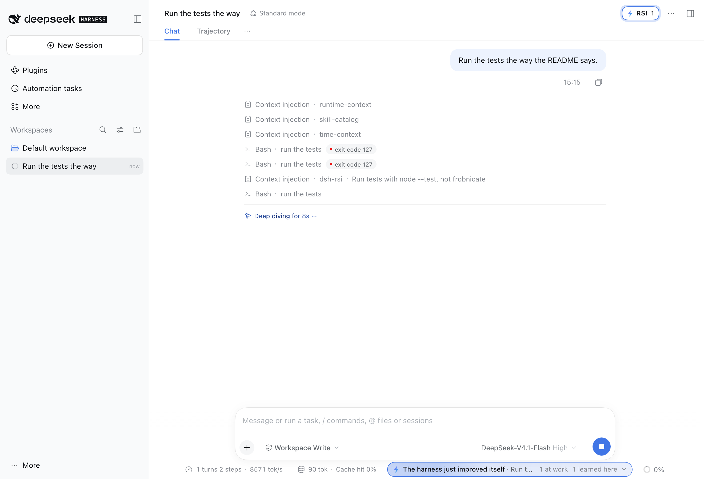

改进前Before
python stats.py
# command not found: python没有插件时，5/5 次会话都在这个坑里停下。写出规则之前，9/9 次同样失败。Without the plugin, 5 of 5 sessions hit this pit. Before a rule was written, 9 of 9 failed the same way.
DSHRSI 是面向 DeepSeek Harness 的开源插件：让 Harness 盯着自己的每一次运行，用当次会话的模型给自己写代码，校验之后在这一轮还没结束时装上。下一次运行，从更好的自己开始。 DSHRSI is an open-source plugin for DeepSeek Harness: the harness watches its own runs, has the session's model write harness code, validates it, and mounts it before the turn is over. The next run starts from a better harness.


不微调权重，不堆提示词，只改 Harness 代码。提示词、记忆文件、Skill 都是给模型多读一段话；DSHRSI 改的是模型跑在上面的那一层。No fine-tuning. No pile of prompts. Only harness code. Prompts, memory files and skills give the model more to read; DSHRSI changes the layer the model runs on.


模型还是原来的模型。改的不是参数，是它做事时用的 Harness。The model stays the model. What changes is the harness it works through, not its parameters.
不是再往上下文里塞一段说明。改进写成代码，过关之后挂上。It does not stuff another paragraph into context. The improvement is code, mounted after it passes the gate.
车手是模型，车是 Harness，新零件是这一轮里写出的代码。下一次请求，从装好零件的车上出发。The driver is the model, the car is the harness, the new part is code written mid-turn. The next request leaves the pits with that part on.
16 个判断点盯着会话：重复失败的调用、你给过的纠正、没验证就收工的一轮。16 detectors watch the session: calls that fail again, corrections you already made, turns that end with nothing verified.
同一个麻烦再来，会话里的模型就给 Harness 写一段代码。被打回，就带着原因重写。When the same trouble comes back, the session's model writes harness code. If it is rejected, it goes back with the reasons.
校验全部通过才会装上，并在下一次模型请求之前生效。It is mounted only after every check passes, and takes effect before the next model request.
有效的留下，出错的隔离，没拦住的重写。项目规矩可以写进仓库，跟着代码走。What works is kept, what throws is isolated, what did not hold is rewritten. Project rules can go into the repository and travel with the code.
说明里写的是 python stats.py，这台机器上却只有 python3。改进不是偷偷改命令，而是写出一条规则：提示改用 python3，若仍调用 python 就拦截。The instructions say python stats.py, but the machine only has python3. The improvement does not silently rewrite the command. It writes a rule: prompt for python3, and deny python if it is still called.
python stats.py
# command not found: python没有插件时，5/5 次会话都在这个坑里停下。写出规则之前，9/9 次同样失败。Without the plugin, 5 of 5 sessions hit this pit. Before a rule was written, 9 of 9 failed the same way.
python3 stats.py
# the rule is deny + prompt,
# not a rewritten command规则挂上之后，0/7 次再失败。它不保证模型再也不试旧命令，但同一类失败不再无声地重复。After the rule was mounted, 0 of 7 failed again. It does not promise the model will never retry the old command; it stops the same failure repeating in silence.
真实 dsh 会话，模型 mimo-v2.6-pro。样本小，不是成功率统计；有无插件，最终都给出了正确答案。Real dsh sessions with mimo-v2.6-pro. The sample is small, not a success-rate statistic; every session, with or without the plugin, still produced the right answer.
3,390 次真实 dsh 会话，对照原版 DeepSeek Harness。我们已经实现了改进；解题率上两套 Harness 仍分不开。3,390 real dsh sessions, against stock DeepSeek Harness. The improvements are real; on task success the two harnesses still cannot be told apart.
MBPP+ × mimo-v2.6-pro：测试在第一次断言失败就退出的情况，从 16/310 降到 3/310（p=0.002）。这是已验证、统计上站得住的改进。它没有让更多任务通过。MBPP+ × mimo-v2.6-pro: tests aborting on the first assertion failure fell from 16/310 to 3/310 (p=0.002). This is a verified, statistically supported improvement. It did not make more tasks pass.
MBPP+ × mimo-v2.6-flash：通过题数从 308/378 到 315/378，净多通过 7 题（13 题仅在加上插件后通过，6 题仅在基线通过；p=0.17）。已完成套件里最大净损失为 −3。整体解题率仍无法与随机波动区分。MBPP+ × mimo-v2.6-flash: passes went from 308/378 to 315/378, a net gain of 7 (13 tasks passed only with the plugin, 6 only on the baseline; p=0.17). The largest completed-suite net loss is −3. Overall pass rates are still not distinguishable from chance.
Mbpp/103, 116, 244, 255, 260, 264, 310, 564, 626, 769, 773, 797, 801 · vs 3, 84, 129, 439, 580, 786
逐步看一次改进的实录 →A trace of one improvement →四个基准的完整结果 →Full results on four benchmarks →
这台电脑的事实：缺一个命令，端口被占，内网域名解析不了。在第二个项目里再遇到，就对整台机器生效。Facts about this computer: a missing command, a port taken, an internal host that does not resolve. Met again in a second project, it applies machine-wide.
你希望怎样被对待。给一条回复点了差评并说“太长了”，以后所有项目都记得。How you want to be treated. Mark a reply as bad with the reason "too long", and every project remembers.
一个仓库的规矩，直接写进仓库：提交就是共享，删掉就是拔掉。别人的机器确认之后才运行。The rules of one repository, written into the repository itself. Commit to share, delete to unplug; another machine runs them only after its owner accepts them.
未来的 Harness 不必靠人一次次手动更新。它从失败路径的 trace 里定位问题，验证成功的走法，再提炼可复用的改进。第一次仍可能踩坑；学到并验证之后，同一类坑会少反复出现。The next harness should not wait for manual updates. It locates trouble in traces of failed paths, checks a successful way through, and distills a reusable improvement. The first attempt may still stumble; after that lesson is proven, the same pit shows up less often.
比如，macOS 默认往往没有 GNU timeout。构想是：Harness 记下这类环境差异，而不是每次都先失败一次。For example, macOS does not usually ship GNU timeout. The idea is that the harness remembers this kind of environment fact, instead of failing once every time.
某次因为虚拟环境、软件包或路径没准备好而跑不通。验证过可行的走法之后，下一次先检查、再复用，而不是把成功轨迹原样照抄。A run fails because a venv, a package or a path was missing. After a working path is proven, the next run checks and reuses it — it does not copy a successful trace verbatim.
不要改 notes.txt，写到草稿里。没有插件时，下一会话仍改了原文件；有插件时，下一会话主动写到草稿。Don't edit notes.txt; write to a draft. Without the plugin, the next session still edited the original; with it, the next session wrote to the draft on its own.
或许，最棒的 Harness，就在你的电脑上诞生。Perhaps the best harness will be born on your machine.
递归自我改进不必先改权重。只要运行时的反馈能不断变成经过验证的 Harness 代码，就会长出一个专属于你、并且持续进化的 Harness。Recursive self-improvement does not have to start with weights. If runtime feedback keeps turning into validated harness code, you get a harness that is yours — and that keeps evolving.
你的下一代 Coding Agent，从这里开始。Your next coding agent starts here.


不需要配置。同样的麻烦再次出现之前，它不露面。Nothing to configure. It stays out of sight until the same trouble comes back.
打开 Plugins → Add plugin → Install a third-party plugin，粘贴下面的地址，点 Install，再点 Enable now。Open Plugins → Add plugin → Install a third-party plugin, paste the address below, select Install, then Enable now.
https://github.com/qybaihe/dshrsi/releases/download/v0.1.3/dsh-rsi-0.1.3.tgz一条命令装好，再打开界面。One command to install, one to open the UI.
dsh plugin --profile web add https://github.com/qybaihe/dshrsi/releases/download/v0.1.3/dsh-rsi-0.1.3.tgz
dsh web这个词在这里具体指什么，边界在哪。What the term means here, and where it stops.
→从会话事件到挂载的代码，每一步怎么做。From session events to mounted code, step by step.
→亲手写一个适配，放进仓库，让全组用上。Write an adaptation by hand, put it in the repository, share it with the team.
→四个基准，和原版逐题对照，结果和局限都在。Four benchmarks, task by task against the stock harness, results and limits included.
→